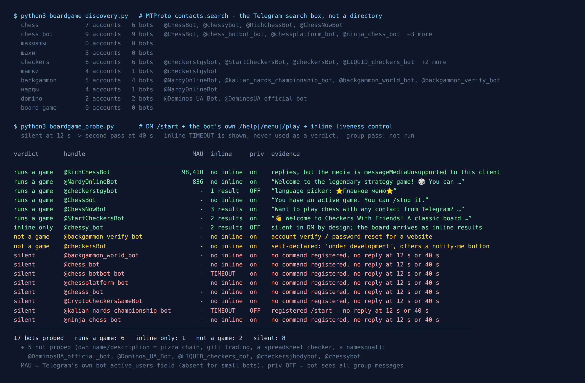

Telegram Board Game Bots: 22 Tested, 7 Actually Play
A card game in a group chat has one hard problem: everyone has to see their own hand and nobody else’s. A board game has the opposite problem. Chess, checkers and backgammon have no secrets at all — the whole point is that both players stare at the same position. What they need instead is a surface: one picture of the board that changes after every move, sitting somewhere two people can both reach.
Telegram gives a bot three ways to build that surface, and the three families I tested each picked a different one. On the evening of 21 September 2026 I asked Telegram’s own search which board game bots exist, messaged every one it returned, and wrote down what happened. Same method as the card game census two nights earlier.
22 bots came back. 7 play a game. 8 never answered, at twelve seconds or at forty. The biggest one has 98,410 monthly users and replies with a message my client cannot render a single character of. And the most obvious search term in the whole set — “board game” — returns zero accounts.

How the list was built
Bot directories keep an entry alive for years after the server behind it has stopped paying rent. So this list did not come from a directory. It came from the platform: the Telegram search box calls an API method named contacts.search, and that method only returns accounts that exist at the moment you ask.
Ten queries, fixed in writing before anything was measured: chess, chess bot, шахматы, шахи, checkers, шашки, backgammon, нарды, domino, board game. Each returned up to fifty accounts; I kept the bots and threw away the humans and the groups. That gave 22 distinct bot accounts.
Five I never messaged, because their own names said what they were: two Domino’s Pizza ordering bots, a gift-trading tool called @LIQUID_checkers_bot, a Google Sheets checker, and @chessybot — called “Chest 🐝”, one letter from the real @chessy_bot, nothing to do with chess. The remaining 17 each got a private /start, then their own registered game command if they had one, then an inline query as a liveness control. Anything silent at twelve seconds got a second pass at forty.
The word that finds nothing
Before any bot answered, the search itself said something. шахматы, the Russian word for chess — the single most-typed chess word in Telegram’s largest language region — returned zero accounts. Not zero bots. Zero accounts of any kind. board game returned zero as well. шахи, the Ukrainian word, returned three accounts and no bots.
Meanwhile chess returned six bots and chess bot returned nine. The bots exist; the Cyrillic query cannot see them. That is not censorship or a regional block, it is how the method works: contacts.search matches usernames and display names, and every chess bot in this census named itself in Latin script. @checkerstgybot is the exception that proves it — it calls itself “Шашки в Телеграмм” and it is the only bot the query шашки found.
Then there is domino. Two bots, both pizza: @DominosUA_official_bot and @Dominos_UA_Bot. No domino game on that shelf at all — the same trap the card census hit, where the Russian word for “cards” returned fuel-card sellers. The generic word belongs to whoever commercialised it first, and games lose that fight.
chess, checkers and backgammon are the three words that return actual games.The biggest bot sends a message I cannot read
@RichChessBot carries 98,410 monthly users on Telegram’s own counter — 118 times the next-largest bot in this census. Its description promises chess “using Telegram’s revolutionary rich text formatting”, and says it works in groups and channels.
It answered /start in under twelve seconds. The reply contained zero characters of text, zero formatting entities and zero buttons. Its /games command returned exactly the same thing. What the message did carry was a media object that the MTProto library I use reports as messageMediaUnsupported, which Telegram’s API reference defines in one line: “Current version of the client does not support this media type.”
That is not a dead bot and it is not an empty message. The bot is sending something built on a newer API layer than my reader understands, and the reader is doing the correct thing: refusing to guess. In an up-to-date official Telegram app, those 98,410 people are presumably seeing a chessboard.
It still matters. If you open this bot in an old client, on a desktop build you have not updated, or through a third-party app, you may get a blank message and conclude it is broken. It isn’t — your client is behind. And anything that reads Telegram programmatically, from an archive to an accessibility tool, sees nothing here at all.
I logged this as “runs a game” rather than “silent”, and that distinction is the whole discipline of this census. A reply you cannot parse is still a reply.
Chess is played through inline mode, not in your group
Here is the structural finding, and it surprised me. @ChessBot and @ChessNowBot both carry a typed platform flag called bot_nochats. That flag means Telegram itself will refuse to let you add the bot to a group. You cannot put them in your chat, no matter what admin rights you offer.
They are not crippled by that. They use inline mode instead. You type the bot’s username in any chat — a group, a channel, a DM — and its results appear above your keyboard. @ChessNowBot offered me three: “Bullet (1|0)”, “Blitz (3|2)” and “Rapid (10|5)”, each one a ready-made game invitation, with the sample text “Creating a gaming session”. Its /start reply spells out the trick explicitly: type @ChessNowBot and a space, and “the first person to click Join” becomes your opponent.
@chessy_bot takes it further and is the most interesting bot in the census. It answered nothing to /start, at twelve seconds and at forty. By the rules of every previous census I have run, that is a silent bot. But its inline query came back with two live results, each one a rendered board: “White (bottom): Charlie — waiting for a black side.” Its own description says it: works inline only.
So silence in a private message is not a verdict here. That is the mirror image of a mistake I made in this series back on 16 September, when I read an inline timeout as proof that a bot was switched off and had to correct three published posts. Both errors come from the same place: treating one channel’s silence as a fact about the whole server.
Why does chess, a game with no hidden information, end up inline anyway? Because the bot never needs to read your group. A switch-inline button lets the game be sent into a chat rather than hosted inside it: nothing joins, nothing gets admin rights, nothing sees the other 400 messages. That is the opposite of the party and word game bots in this series, which have to be in the room to referee it.
Want a round without adding a bot?
The free Party Game runs inside Telegram itself, so there’s nothing to add to your group, no admin rights, and nothing reading the chat: Would You Rather, Never Have I Ever, Truth or Dare and quiz rounds, from two players up.
Open the Party Game No Telegram? It runs in a browser too: charliemorrison.dev/party-gameCheckers is the family that still joins your group
Checkers was the only query that returned bots you can actually add to a chat, and it returned two working ones.
@checkerstgybot is Russian-language, calls itself version 2.1, and sent a menu with a “👥 Добавить в группу” button wired to a ?startgroup= link — the standard add-to-group invite. Its inline query returned a live board rendered as text: “Charlie ⚪ 🆚 ❔❔❔ ⚫ / Ходит: 👉 Charlie”. It also carries the bot_chat_history flag, which means privacy mode is off: once in your group, it receives every message, not just the ones addressed to it. That is normal for a bot that watches for moves typed as plain text, and it is still worth knowing before you add it. Telegram explains the setting in its bot features guide.
@StartCheckersBot is the English one, and it took the third route: a draughts Mini App. Its /start offers “🌎 Play Online”, which opens a web view hosted on a Cloudflare Workers domain, plus a “🤗 Play with Friend” switch-inline button. Its inline results are “New Classic Checkers Game” and “New Russian Checkers Game” — two rule sets, which is more care than most of this census showed. Privacy mode is on.
So all three surfaces appear in one family: a group-resident bot, an inline invitation, and a Mini App web view. If you want a board game running inside your group chat rather than sent into it, checkers is currently the only one of these four games where that works.
Backgammon: one game, one password desk, one scoreboard
The backgammon query returned four bots and exactly one of them plays backgammon.
@NardyOnlineBot — 836 monthly users, the only other bot in this census with a visible user count — is the real one. It opened with “Welcome to the legendary strategy game”, offered a rules button and a language switch, and said you can play contacts or a bot, that games are saved when you close the window, and that they continue across devices. That last detail tells you it is a Mini App with server-side state, not a chat game.
@backgammon_verify_bot sounds like a game and is a help desk: “This bot verifies your account and helps reset your password in Backgammon Online.” It is the support appendix of a website, sitting in the game’s search results.
@kalian_nards_championship_bot never answered, but its registered command list gives it away: /endgame, /today, /statistic, /playerstable, /addquote. That is not a game engine. That is a scoreboard for a real-life backgammon championship among friends, where the games happen on an actual board and the bot only keeps the table. Its privacy mode is off, which fits — it needs to read the chat.
@backgammon_world_bot pointed at a site called BACKGAMMON.INK and never replied to anything.
The eight that never answered
Eight of the 17 I messaged were silent at twelve seconds and again at forty: @chess_bot, @chess_botbot_bot, @chessplatform_bot, @chesss_bot, @ninja_chess_bot, @CryptoCheckersGameBot, @backgammon_world_bot and @kalian_nards_championship_bot.
The pattern in the handles is the giveaway: @chess_bot, @chesss_bot, @chess_botbot_bot. Name squats and abandoned starts — short, obvious usernames claimed early, kept forever, serving nothing. @chessplatform_bot still has “a proper description with features will go here later” as its bio, in Russian. @checkersBot, which did answer, answered with “The bot is currently under development. Would you like to be notified when it’s ready?”
Two of the eight produced an inline timeout — Telegram forwarded a query to their server and waited for a reply that never came. That is the closest thing to evidence of a switched-off backend this test can produce, but after September’s correction I record it as a reading, not a verdict. The other six have inline mode disabled, so there is no signal about them in either direction.
Compare the ratios across this series: 8 of 17 silent for board games, 10 of 26 for card games, 29 of 43 for spy games. Board and card game bots survive; the novelty party bots do not. A chess bot does one durable thing forever, which makes it cheap to keep running.
For a group that would rather not add a bot
The Telegram Party Pack is 255 group-chat prompts — 45 Never Have I Ever statements, 30 Would You Rather dilemmas, 110 Truth or Dare — as copy-paste text and ready-made poll blocks. There are no board games in it. It’s for the nights when you want the chat itself to play, without handing a stranger’s bot a seat in it.
Get the pack — $9.99 Or see which card game bots still deal.What I could not test
No game was played to the end. I read menus, opened inline results and got one board rendered as text. A bot can present a flawless opening screen and still lose your position on move nine.
The group pass did not run. Everything about group behaviour here is read from Telegram’s typed flags — bot_nochats and bot_chat_history — not from watching a bot referee a live game. Those flags are the platform’s own record, so they are reliable about permissions and silent about quality.
Silent is not dead. Six of the eight quiet ones have inline mode switched off, so this test has no channel to reach them at all. @chessy_bot is the standing proof that a bot can ignore private messages and still work perfectly.
The MAU field is patchy. Telegram exposed a monthly user count for only two of the 22. No number is not evidence of a small bot.
If you just want to play tonight
- Chess with one person, in any chat:
@ChessNowBot. Type its username and a space in the chat you want to play in, pick Bullet, Blitz or Rapid, and the first person to click Join is your opponent. You never add anything to the group. - Chess with the most users behind it:
@RichChessBot. 98,410 monthly users, works in groups and channels — but update your Telegram app first, because on an old client its board may arrive as a blank message. - Checkers actually inside your group:
@checkerstgybot(Russian interface, privacy mode off, so it reads the whole chat) or@StartCheckersBot(English, Mini App, privacy mode on). - Backgammon:
@NardyOnlineBot. The only one of four that plays. Games survive closing the window. - Send
/startin private and wait fifteen seconds before you commit to anything — with the one caveat this census added: if the bot’s description says it works inline, try the inline query before writing it off.
If you are planning a whole evening rather than one match, the game night guide covers what breaks first in a busy chat, and the party games list has games that need no bot at all. For two people specifically, the two-player list is the closer match to this one. And if your group would rather name songs than move pieces, the guess-the-song census ran the same test on music quiz bots.
Bots change fast, so the date at the top matters more than the ranking. Fifteen seconds of /start beats any list, this one included.